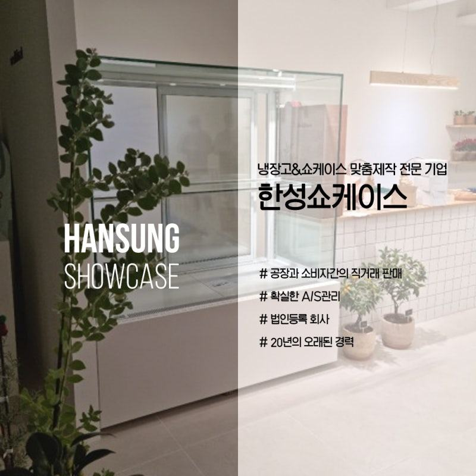
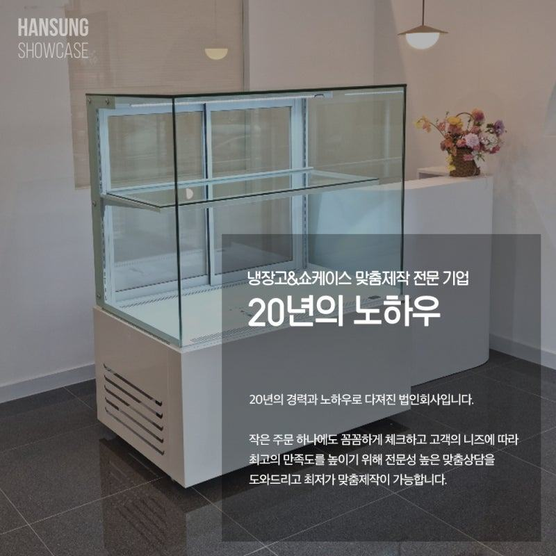
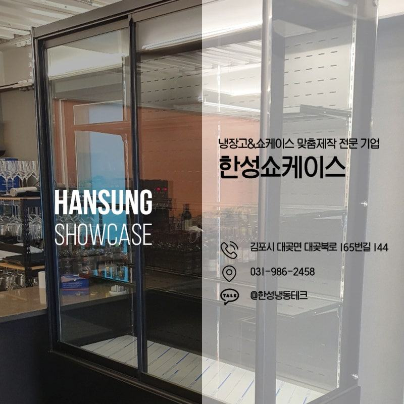

과일진열쇼케이스
과일가게 쇼케이스 배치, 상온 매대와 냉장칸 나누는 법

과일가게는 입구 쪽에 계절 과일 상온 매대를, 안쪽이나 벽면에 냉장 과일쇼케이스를 두어 손님이 매장 안까지 들어오게 하는 배치가 기본입니다. 냉장 쇼케이스는 햇빛과 출입문 바람을 피하고 창고와 가까운 자리에 두어야 과일 상태와 보충 동선을 함께 지킬 수 있습니다.
안녕하세요. 과일가게와 청과 매장에 맞춤 냉장 진열장을 만드는 한성쇼케이스입니다.
과일가게를 여실 때 가장 먼저 고민하시는 게 매대를 어디에 두고, 냉장 쇼케이스는 어느 벽에 붙일지입니다.
과일은 색과 향으로 손님을 끄는 상품이라 어떻게 펼쳐 놓느냐가 그날 매출을 좌우하지만, 한 번 자리 잡은 쇼케이스는 옮기기도 쉽지 않습니다.
게다가 과일은 상온에 둬야 맛이 사는 것과 차갑게 보관해야 하는 것이 섞여 있어 배치가 더 까다롭습니다.
오늘은 과일가게에서 상온 매대와 냉장 쇼케이스를 나누고 손님 동선을 짜는 기준을 정리해 드리겠습니다.
1. 입구는 상온 매대, 안쪽은 냉장 쇼케이스
과일가게 입구에는 계절 과일을 박스째 쌓은 상온 매대를 두는 경우가 많습니다. 지나가던 손님이 색과 향에 끌려 발걸음을 멈추게 만드는 자리이기 때문입니다.
냉장 쇼케이스는 매장 안쪽 벽면에 두는 편이 좋습니다. 손질한 과일, 컵과일, 딸기나 체리처럼 냉장 보관이 필요한 상품을 안쪽에 두면 손님이 상온 매대를 지나 매장 깊숙이 들어오게 되고, 그 사이 다른 과일을 더 둘러보게 됩니다.
- 입구 매대에는 계절 주력 과일을 두세요.
- 냉장이 필요한 고가 과일과 손질 과일은 안쪽으로 모으세요.
2. 냉장 쇼케이스 자리에서 피할 곳
과일가게는 문을 활짝 열어 두고 영업하는 경우가 많아 출입문 가까운 쇼케이스는 바깥 공기를 그대로 맞습니다.
여름에는 냉기가 약해지고 유리에 김이 서려 과일이 잘 안 보이게 됩니다.
창가 자리도 주의하셔야 합니다. 햇빛이 쇼케이스 유리에 직접 닿으면 내부 온도가 오르고, 과일 표면이 마르거나 색이 바래기 쉽습니다.
블라인드로 가릴 수 없는 자리라면 쇼케이스 위치를 옮기는 것이 낫습니다.
- 출입문 바로 옆은 피하세요.
- 햇빛이 직접 드는 창가는 피하세요.
- 기계실 열이 상온 매대 쪽으로 나오지 않게 하세요.


3. 창고와 보충 동선
과일가게는 아침마다 경매나 도매에서 받아 온 박스를 정리해 채우는 일이 많습니다. 창고나 뒷문에서 냉장 쇼케이스까지 가는 길이 손님 통로를 가로지르면 영업 중 보충이 번거로워집니다.
가능하면 냉장 쇼케이스를 창고 쪽 벽에 붙이고, 손질 작업대도 그 근처에 두세요. 손질한 과일을 바로 냉장 칸에 넣을 수 있어야 상온에 머무는 시간이 줄고 신선도도 지킬 수 있습니다.
4. 계산대 옆에는 작은 쇼케이스
계산대 옆은 손님이 결제하며 잠깐 서 있는 자리입니다. 여기에 낮은 냉장 쇼케이스를 두고 컵과일이나 생과일 주스처럼 바로 먹을 수 있는 상품을 놓으면 마지막에 하나 더 고르는 손님이 생깁니다.
이 자리는 크기가 작고 카운터 높이에 맞아야 해서 기성품으로는 딱 맞추기 어려운 경우가 많습니다. 카운터 폭과 높이를 재 두셨다가 맞춤 제작으로 상담해 보세요.
5. 냉장칸 안의 배치도 동선입니다
냉장 쇼케이스 안에서도 손님 눈높이 단에는 그날 가장 팔고 싶은 과일을, 아래 단에는 묶음 상품이나 재고를 두는 식으로 나누면 고르는 시간이 짧아집니다.
수분이 많은 과일과 단단한 과일은 칸을 나눠 두면 서로 상태에 영향을 덜 줍니다.
체크리스트
- 입구 상온 매대와 안쪽 냉장 구역 구분
- 출입문·창가 피한 쇼케이스 위치
- 창고에서 냉장칸까지 보충 동선
- 손질 작업대와 냉장칸 거리
- 계산대 옆 미니 쇼케이스 치수
현장에서 자주 보는 경우: 쇼케이스에 매장을 맞추게 될 때
과일가게를 여실 때 기존에는 일률적인 디자인과 규격의 냉장고 중에서 골라야 해서, 공간에 쇼케이스를 맞추는 게 아니라 쇼케이스에 공간을 맞추게 되는 경우가 많았습니다.
그러다 보니 배치가 어긋나고 매장 디자인도 원하는 대로 나오지 않습니다.
저희는 과일쇼케이스를 매장 크기와 원하는 디자인에 맞춰 맞춤 제작하고, 공장과 직거래로 판매합니다. 제조 공장을 직접 운영하고 있어 문제가 생겼을 때도 장사에 지장이 없도록 바로 수리를 맡기실 수 있습니다.




자주 묻는 질문
과일가게 냉장 쇼케이스는 몇 대가 적당한가요?
취급하는 냉장 과일의 종류와 양, 매장 벽 길이에 따라 달라집니다. 손질 과일과 통과일을 나눠 보관하실 계획이라면 두 구역으로 나누는 구성을 함께 검토해 보세요.
문을 열어 두고 영업해도 괜찮을까요?
문을 열어 두는 매장이라면 냉장 쇼케이스를 출입문에서 최대한 멀리 두시는 것이 좋습니다. 바깥 공기가 직접 닿으면 냉기가 약해지고 유리에 김이 서리기 쉽습니다.
계산대 높이에 맞는 작은 쇼케이스도 만들 수 있나요?
가능합니다. 카운터 폭과 높이, 진열할 상품을 알려 주시면 그 자리에 맞는 크기로 제작해 드립니다.
매장 조건에 맞춰 만드는 한성쇼케이스
원하시는 제품 사진과 설치할 공간 사진만 보내 주셔도 매장에 맞는 구성을 추천해 드립니다.
- 전국 240여 개 A/S 전담 센터 운영
- 본사 대량 자재 매입으로 품질 대비 합리적인 가격
- 유럽제·삼성 냉각 콤프레셔 적용
- 국내 최초 쇼케이스 전문 디자이너 상주
매장 폭과 원하는 진열 구성을 알려 주세요. 실측과 견적을 안내해 드립니다.
031-986-2458